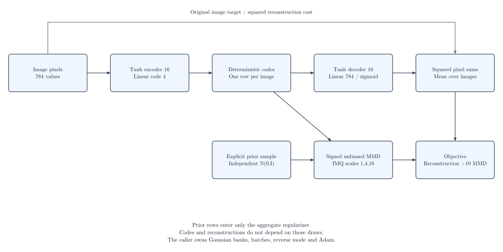
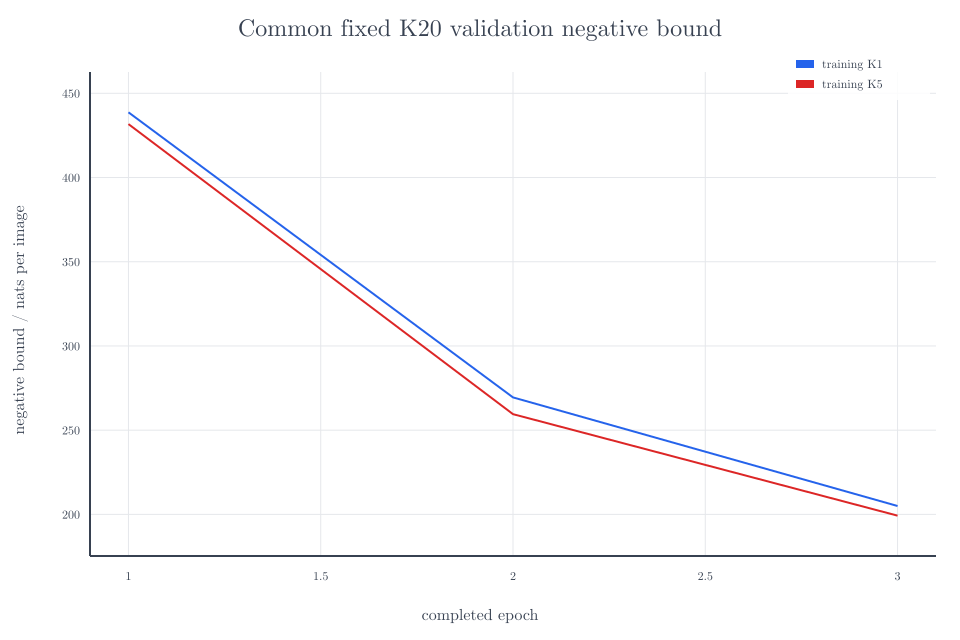
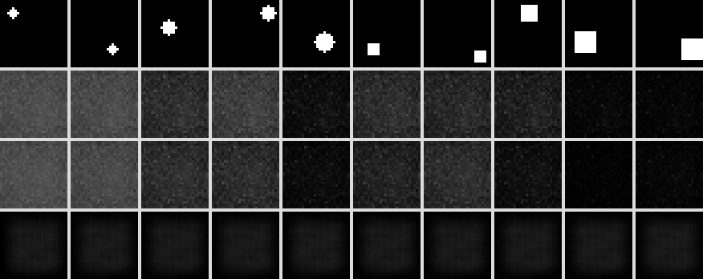
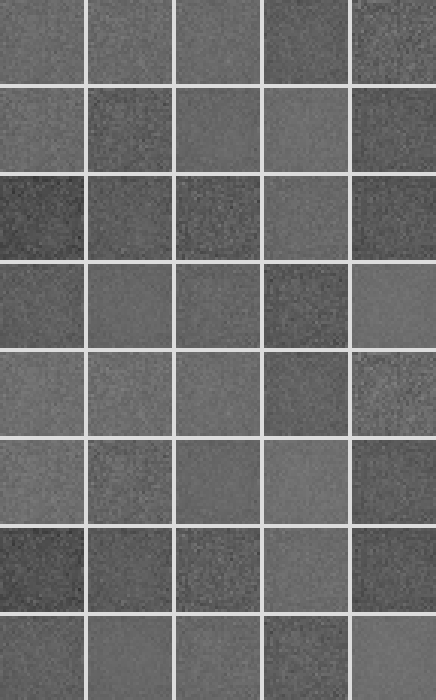

Importance Weighted Autoencoders: Sampled Ratios and Common Selection
Abstract
An importance weighted autoencoder combines several posterior samples through the logarithm of their mean importance weight. This report makes the sampled density ratio and ordinary pathwise gradients explicit, then fits matched K1/K5 Gaussian models on a tiny known-factor binary-image lattice. Both receive the same initial weights, minibatch order and first draw, 21 Adam updates and a common fixed K20 validation criterion. Both select epoch 3. Heldout K20 negative bounds are 201.517/195.133 nats per image, while decode(mu) MSE is 0.06959/0.06612 versus 0.04855 for the fitting-only pixel mean. Weight concentration, unfiltered reconstructions and prior probabilities retain the limitations of these short runs. A finite Monte Carlo bound is not an exact likelihood, and no particular nested draw must improve with K.
Several posterior draws, one per-image bound
[Burda, Grosse and Salakhutdinov's Importance Weighted Autoencoders](https://arxiv.org/abs/1509.00519) use the same encoder/decoder architecture as a VAE while changing the variational objective. For each image x, draw K independent epsilon values and set z_k=mu+exp(l/2)⊙epsilon_k. Here q is a four-coordinate diagonal Gaussian, p(z) is standard normal, and p(x|z) is a factorized Bernoulli decoder. The encoder is 784→32 ReLU→two four-coordinate heads; the decoder is 4→32 ReLU→784 logits. Ten trainable tensors contain 51,416 scalars.
Pixel NLL sums all 784 features; Gaussian log densities sum all four coordinates. There is no extra division by K after log-mean-exp and no analytic KL substitution. K1 is a sampled negative ELBO, rather than the analytic-KL estimator used by the beta-VAE report. Their expectations agree, but their values and gradients at a supplied noise draw can differ. All q parameters and z remain live: the implementation uses ordinary full pathwise gradients, not a detached-weight surrogate or a doubly reparameterized gradient estimator.
#include <dm/dm.hpp>
int main() {
std::filesystem::create_directories("build");
dm::graphics::Diagram d(52, 1350);
dm::graphics::DiagramNodeStyle wide;
wide.width = 4.5;
wide.height = 2.5;
dm::graphics::DiagramStroke arrow;
arrow.arrow = true;
auto target = arrow;
target.dashed = true;
d.node("x", {0, 0}, "Binary image x\n784 pixels", wide)
.node("q", {6, 0}, "Gaussian encoder\nmu / log variance", wide)
.node("eps", {0, -4}, "Explicit K draws\nepsilon[K,B,4]", wide)
.node("z", {6, -4}, "Sample-major z\nK x B latent codes", wide)
.node("dec", {12, -4}, "Code-only decoder\nBernoulli logits", wide)
.node("nll", {18, -4}, "Summed pixel NLL\nEach of K x B rows", wide)
.node("ratio", {12, 0}, "Sampled log p(z)-log q(z|x)\nAll continuous paths live", wide)
.node("w", {18, 0}, "Log importance weights\nlog p(z)-NLL-log q", wide)
.node("loss", {24, 0}, "Log-mean-exp over K\nThen mean over B\nCaller owns Adam", wide)
.edge("x", "q")
.edge("q", "z")
.edge("eps", "z")
.edge("z", "dec")
.edge("dec", "nll")
.edge("q", "ratio")
.edge("z", "ratio")
.edge("ratio", "w")
.edge("nll", "w")
.edge("w", "loss")
.path({{0, 1.25}, {0, 3}, {21.5, 3}, {21.5, -4}, {20.25, -4}}, target)
.save_svg("build/iwae_method.svg");
}
A hand-checkable log-mean-exp and its gradient
Shift each column by its stopped maximum m before exponentiating: logmeanexp(ell)=m+log(sum exp(ell−m))−log K. For log weights log(1), log(2), log(3), the bound is log(2), normalized weights are (1/6,2/6,3/6), and effective sample size is 1/sum(w²)=18/7≈2.57143. The derivative of the *negative* bound with respect to ell_k is −w_k. These same weights arise by differentiating the original objective; the computation keeps the full ordinary path. Equal weights give ESS=K; one dominant weight approaches ESS=1. This diagnoses concentration among supplied draws, not the accuracy of the likelihood estimate or a training convergence proof.
#include <dm/dm.hpp>
int main() {
namespace n = dm::nn;
namespace m = n::models;
const auto t = n::DType::Float64;
auto logw = n::tensor({0., std::log(2.), std::log(3.)}, {3, 1}, t).requires_grad_();
const auto b = m::IwaeLogMeanExp(logw);
const auto g = n::grad(-n::sum(b), {logw})[0];
auto o = m::ImportanceWeightedBound(
n::zeros({3, 1}, t), n::zeros({3, 1}, t), n::zeros({3, 1}, t), -logw.reshape({3}), 3);
if (std::abs(b.item() - std::log(2.)) > 1e-14 ||
std::abs(o.effective_samples.item() - 18. / 7) > 1e-14)
return 1;
auto plot = dm::graphics::RPlot::create();
plot.title("Three importance weights / ESS = 18/7")
.x_label("sample index")
.y_label("normalized weight / negative derivative");
std::vector<double> index{1, 2, 3};
plot.lines(
index,
o.normalized_weights.to_vector<double>(),
"normalized weight",
dm::RGBA{37, 99, 235},
2);
plot.lines(index, g.to_vector<double>(), "negative-bound derivative", dm::RGBA{220, 38, 38}, 2);
plot.save_svg("build/iwae_hand.svg");
std::print(
"Bound {:.12f}; negative bound {:.12f}; ESS {:.12f}.\n",
b.item(),
o.loss.item(),
o.effective_samples.item());
const auto extreme = m::IwaeLogMeanExp(n::tensor({1000., 1001., 999.}, {3, 1}, t));
if (!std::isfinite(extreme.item()))
return 1;
std::print("Shifted extreme bound {:.12f}; no raw exp(1000).\n", extreme.item());
}Bound 0.693147180560; negative bound -0.693147180560; ESS 2.571428571429. Shifted extreme bound 1000.308993675776; no raw exp(1000).

Jensen's inequality bounds log p(x) by the *expected* log importance estimate under independent q draws. Expected IWAE bounds tighten as K increases under the usual integrability conditions. A specific finite draw is not guaranteed to improve: extending log weights[0] with −10 lowers logmeanexp from 0 to approximately −0.693102. All comparisons below retain finite estimates rather than presenting them as exact log likelihoods.
Native data preparation and visible paired fitting
The offline native beta-vae-assets preparation exhausts 2 shapes×3 sizes×7 x×7 y=294 unique binary 28×28 images. Radius is size+2, center=(3x+5,3y+5); circles and squares use inclusive Euclidean/Chebyshev radii. Residue(x+2y+size+3shape) mod7 assigns test0, validation1, fit2–6, yielding 210/42/42 disjoint combinations with balanced factor marginals. Factors are used only in post-training fitting-only probes. This is a tiny structured teaching lattice, not an IID benchmark or evidence of disentanglement.
#include <dm/dm.hpp>
int main() {
namespace n = dm::nn;
std::filesystem::create_directories("build/iwae");
const std::filesystem::path cache = dm::datasets::data_home();
dm::datasets::prepare_example_data("beta-vae-assets", cache.string());
auto arrays = n::load_npz((cache / "beta_vae/factors.npz").string());
std::set<int> ids;
std::set<std::vector<int>> images;
for (auto& [name, value] : arrays) {
if (name.ends_with("_images")) {
for (int b = 0; b < value.size(0); ++b) {
auto row = n::select(value, 0, b).to_vector<int>();
if (!images.insert(row).second)
return 1;
}
value = n::cast(value, n::DType::Float32);
}
if (name.ends_with("_source_ids"))
for (int id : value.to_vector<int>())
if (!ids.insert(id).second)
return 1;
}
if (ids.size() != 294 || images.size() != 294)
return 1;
n::save_npz("build/iwae/data.npz", arrays);
std::filesystem::copy_file(
cache / "beta_vae/manifest.json",
"build/iwae/data_manifest.json",
std::filesystem::copy_options::overwrite_existing);
std::print(
"| split | images | features |\n|---|---:|---:|\n| fit |210|784|\n| validation |42|784|\n| "
"test |42|784|\n");
}| split | images | features |
|---|---|---|
| fit | 210 | 784 |
| validation | 42 | 784 |
| test | 42 | 784 |
Both models start from the same seed2237 arrays, BatchOrder(210,32,2243) and shared noise banks. Training banks contain five draws per image, seeds2438/2439/2440; K1 takes their first draw and K5 takes all five. Fixed evaluation banks use 20 draws (fit2411, validation2417, test2423), with prior seed2429. The explicit MT19937/Box–Muller Float64 bank and its Float32 cast are saved. Every epoch has six full batches and one final 18-image batch: 21 Adam updates per model, learning rate0.003, moments0.9/0.999, epsilon1e-8 and independent optimizer state.
Completed epochs1–3 are eligible. *Both* checkpoints minimize the same fixed K20 validation negative bound, never their differently sampled training objectives. Test pixels and factors never select an epoch. ESS averages per-case diagnostics in Float64; the scalar bound retains the source Float32 reduction. Inference uses supplied noise and leaves all weights unchanged. The editable complete program below calls native forwards and contains the actual gradient, Adam step, sample selection, validation and checkpoint restore.
#include <dm/dm.hpp>
namespace nn = dm::nn;
void Require(bool condition, const std::string& why) {
if (!condition)
throw std::runtime_error(why);
}
void Near(double x, double y, double tolerance, const std::string& why) {
Require(std::abs(x - y) <= tolerance, why);
}
struct BetaFactorData {
nn::Tensor images, factors, source;
};
struct VaeNoiseBank {
nn::Tensor standard, epsilon;
};
nn::Tensor Flatten(const nn::Tensor& t) {
return nn::reshape(t, {t.size(0), 784});
}
nn::Tensor Find(const nn::NamedTensors& a, const std::string& key) {
for (const auto& [k, v] : a)
if (k == key)
return v;
throw std::runtime_error(key);
}
std::vector<float> Bytes(const nn::Tensor& t) {
return t.contiguous().to_vector<float>();
}
nn::NamedTensors Arrays(const nn::ParameterStore& p) {
nn::NamedTensors a;
for (const auto& k : p.names())
a.emplace_back(k, p.at(k).detach().clone());
return a;
}
auto Snapshot(const nn::ParameterStore& p) {
return p.flatten();
}
nn::NamedTensors CheckGradients(
const nn::ParameterStore& p,
const std::vector<nn::Tensor>& gs,
const std::string&,
const std::string&) {
nn::NamedTensors a;
Require(gs.size() == p.size(), "all10 gradients");
const auto names = p.names();
for (std::size_t i = 0; i < gs.size(); ++i) {
double norm = 0;
for (double x : gs[i].to_vector<double>()) {
Require(std::isfinite(x), "finite derivatives");
norm += x * x;
}
Require(norm > 0, "nonzero derivative in each tensor");
a.emplace_back(names[i], gs[i]);
}
return a;
}
VaeNoiseBank BetaVaeNoise(std::int64_t n, std::int64_t samples, std::uint32_t seed) {
const auto standard = nn::models::GaussianNoise({n, 4}, samples, seed);
return {standard, nn::cast(standard, nn::DType::Float32)};
}
nn::Tensor BetaVaeNoiseAt(const VaeNoiseBank& bank, int k) {
return nn::select(bank.epsilon, 0, k).contiguous();
}
std::vector<nn::Tensor>
Evaluate(nn::ParameterStore& p, const nn::Tensor& images, const nn::Tensor& epsilon) {
nn::NoGradGuard guard;
auto o = nn::models::ImportanceWeightedAutoencoder(p, Flatten(images), epsilon);
std::vector<nn::Tensor> out{
o.mu,
o.log_variance,
o.z,
o.probability,
o.nll,
o.kl,
o.loss,
o.negative_bound,
o.log_weights,
o.normalized_weights,
o.effective_samples};
for (auto& t : out) {
t = t.contiguous();
for (float v : t.to_vector<float>())
Require(std::isfinite(v), "all eleven IWAE fields finite");
}
return out;
}
nn::Tensor Decode(nn::ParameterStore& p, const nn::Tensor& z) {
nn::NoGradGuard guard;
return nn::sigmoid(nn::models::GaussianVaeDecode(p, z)).contiguous();
}
nn::Tensor IwaeNoiseRows(
const VaeNoiseBank& bank,
const std::vector<std::int64_t>& rows,
std::int64_t samples) {
Require(samples > 0 && samples <= bank.epsilon.size(0), "available importance draws");
return nn::gather(
nn::slice_axis(bank.epsilon, 0, 0, samples),
nn::from_vector(rows, {std::int64_t(rows.size())}),
1)
.contiguous();
}
std::vector<std::int64_t> IwaeRows(std::int64_t n) {
std::vector<std::int64_t> rows(n);
std::iota(rows.begin(), rows.end(), 0);
return rows;
}
double MaxAbsDiff(const nn::Tensor& a, const nn::Tensor& b, int count) {
auto x = Bytes(a), y = Bytes(b);
double difference = 0;
for (int i = 0; i < count; ++i)
difference = std::max(difference, std::abs(double(x[i]) - y[i]));
return difference;
}
double Mse(const nn::Tensor& a, const nn::Tensor& b) {
return nn::mean(
nn::square(
nn::cast(Flatten(a), nn::DType::Float64) -
nn::cast(Flatten(b), nn::DType::Float64)))
.item();
}
auto BetaFactorProbe(
const std::filesystem::path& root,
const nn::Tensor& fit,
const nn::Tensor& test,
const nn::Tensor& factors,
const nn::Tensor& targets,
const nn::Tensor& lv) {
auto a = nn::models::LatentFactorDiagnostics(fit, test, factors, targets, lv);
nn::save_npz((root / "factor_probes.npz").string(), a);
return std::vector<std::vector<double>>{
Find(a, "single_r2").to_vector<double>(), Find(a, "ridge_r2").to_vector<double>()};
}
nn::Tensor Prefix(const nn::Tensor& t, std::int64_t n) {
return nn::slice_axis(t, 0, 0, n).contiguous();
}
void Checks(const std::filesystem::path& root) {
const std::vector<float> wv{1000, -1000, 1001, -1001, 999, -999};
auto w = nn::from_vector(wv, {3, 2}).requires_grad_();
auto bound = -nn::models::IwaeLogMeanExp(w);
auto gradient = nn::grad(nn::mean(bound, {0}), {w})[0];
auto repeated =
nn::models::IwaeLogMeanExp(nn::tensor({{-700., -800.}, {-700., -800.}, {-700., -800.}}));
auto single = nn::models::IwaeLogMeanExp(nn::tensor({{-700., -800.}}));
const auto bv = bound.to_vector<float>(), gv = gradient.to_vector<float>(),
rv = repeated.to_vector<float>(), sv = single.to_vector<float>();
for (int b = 0; b < 2; ++b) {
double maximum = -std::numeric_limits<double>::infinity();
for (int k = 0; k < 3; ++k)
maximum = std::max(maximum, double(wv[k * 2 + b]));
double sum = 0;
for (int k = 0; k < 3; ++k)
sum += std::exp(wv[k * 2 + b] - maximum);
Near(bv[b], -maximum - std::log(sum / 3), 5e-5, "stable importance bound");
for (int k = 0; k < 3; ++k)
Near(
gv[k * 2 + b],
-.5 * std::exp(wv[k * 2 + b] - maximum) / sum,
1e-7,
"normalized importance gradient");
Near(rv[b], sv[b], 0, "duplicated identical samples leave bound unchanged");
}
nn::save_npz(
(root / "algebra.npz").string(),
{{"log_weights", w.detach()},
{"negative_bound", bound.detach()},
{"gradient", gradient},
{"duplicate", repeated},
{"single", single}});
std::cout << "IWAE stable extremes/K1/duplicate samples/all normalized partials passed"
<< std::endl;
}
std::vector<double>
Score(nn::ParameterStore& model, const nn::Tensor& images, const VaeNoiseBank& noise) {
auto out = Evaluate(model, images, noise.epsilon);
double ess = 0;
for (float v : out[10].to_vector<float>())
ess += v;
return {double(out[6].item<float>()), ess / double(images.size(0))};
}
double Train(
int samples,
int epochs,
const std::vector<BetaFactorData>& data,
const std::vector<VaeNoiseBank>& training,
const std::vector<VaeNoiseBank>& noise,
const VaeNoiseBank& prior,
const std::filesystem::path& root,
const nn::NamedTensors& initial) {
const auto path = root / ("k" + std::to_string(samples));
std::filesystem::create_directories(path);
nn::ParameterStore model(2237);
for (const auto& [name, value] : initial)
model.set(name, value.clone());
nn::OptimizerConfig config;
config.kind = nn::OptimizerKind::Adam;
nn::Optimizer optimizer(model, .003, config);
Require(model.count() == 51416 && model.size() == 10, "same compact VAE census");
nn::save_npz((path / "initial_arrays.npz").string(), Arrays(model));
nn::BatchOrder order(210, 32, 2243);
std::ofstream history(path / "history.tsv"), batches(path / "batches.tsv");
history.precision(17);
history << "epoch\ttrain_preupdate_negative_bound\tvalidation_k20_negative_bound\tvalidation_k20_"
"ess\n";
batches << "epoch\tstep\trow\tsource_id\n";
const auto fit_source = data[0].source.to_vector<int>();
const auto best_path = (path / "best.npz").string();
double best = std::numeric_limits<double>::infinity();
int selected = 0, step = 0;
const auto started = std::chrono::steady_clock::now();
for (int epoch = 1; epoch <= epochs; ++epoch) {
order.begin_epoch();
double sum = 0;
int seen = 0;
for (;;) {
auto rows = order.next();
if (rows.empty())
break;
auto images = nn::take_rows(data[0].images, rows);
auto epsilon = IwaeNoiseRows(training[epoch - 1], rows, samples);
if (step == 0) {
nn::save_npz(
(path / "first_batch.npz").string(), {{"images", images}, {"epsilon", epsilon}});
auto g = CheckGradients(
model,
nn::grad(
nn::models::ImportanceWeightedAutoencoder(model, Flatten(images), epsilon).loss,
model.parameters()),
"all IWAE derivatives finite",
"all ten tensors receive sampled-density IWAE gradients");
nn::save_npz((path / "first_gradients.npz").string(), g);
auto f = Evaluate(model, images, epsilon);
nn::save_npz(
(path / "first_forward.npz").string(),
{{"log_weights", f[8]},
{"normalized_weights", f[9]},
{"negative_bound", f[7]},
{"ess", f[10]}});
}
auto train = nn::models::ImportanceWeightedAutoencoder(model, Flatten(images), epsilon);
sum += double(rows.size()) * train.loss.item<float>();
optimizer.step(nn::grad(train.loss, model.parameters()));
seen += int(rows.size());
for (auto row : rows)
batches << epoch << '\t' << step << '\t' << row << '\t' << fit_source[row] << '\n';
if (step == 0)
nn::save_npz((path / "first_update_arrays.npz").string(), Arrays(model));
++step;
}
Require(seen == 210, "all fitting images once per epoch");
auto score = Score(model, data[1].images, noise[1]);
history << epoch << '\t' << sum / seen << '\t' << score[0] << '\t' << score[1] << '\n';
nn::save_npz(
(path / ("epoch" + std::to_string(epoch) + "_arrays.npz")).string(), Arrays(model));
if (score[0] < best) {
best = score[0];
selected = epoch;
model.save(best_path); // COMMON fixed K20 validation bound selection
}
std::cout << "trainK" << samples << " epoch" << epoch
<< " common validationK20negativebound=" << score[0] << ",ESS=" << score[1]
<< std::endl;
}
const double seconds =
std::chrono::duration<double>(std::chrono::steady_clock::now() - started).count();
nn::ParameterStore deployed(2237);
{
nn::NoGradGuard guard;
nn::models::BetaVariationalAutoencoder(deployed, nn::zeros({1, 784}), nn::zeros({1, 4}));
}
deployed.load(best_path);
Near(Score(deployed, data[1].images, noise[1])[0], best, 1e-8, "fresh common K20 selected score");
const auto before = Snapshot(deployed);
nn::NamedTensors output;
for (int split = 0; split < 3; ++split) {
const std::int64_t n = data[split].images.size(0);
const std::string name = split == 0 ? "fit" : split == 1 ? "validation" : "test";
auto mean = Evaluate(deployed, data[split].images, nn::zeros({1, n, 4})),
draw = Evaluate(deployed, data[split].images, noise[split].epsilon);
Require(Bytes(mean[0]) == Bytes(mean[2]), "zero epsilon gives posterior mean");
auto mu = Prefix(draw[0], n), lv = Prefix(draw[1], n);
const auto a = mu.to_vector<float>(), b = lv.to_vector<float>(),
ma = mean[0].to_vector<float>(), mb = mean[1].to_vector<float>();
for (std::int64_t i = 0; i < n * 4; ++i) {
Near(a[i], ma[i], 4e-6, "mu independent of noise/K up to GEMM roundoff");
Near(b[i], mb[i], 4e-6, "logvariance independent of noise/K up to GEMM roundoff");
}
output.emplace_back(name + "_mu", mu);
output.emplace_back(name + "_log_variance", lv);
output.emplace_back(name + "_mean_prediction", mean[3]);
output.emplace_back(name + "_sample_z", draw[2]);
output.emplace_back(name + "_sample_prediction", draw[3]);
output.emplace_back(name + "_sample_nll", draw[4]);
output.emplace_back(name + "_kl", Prefix(draw[5], n));
output.emplace_back(name + "_log_weights", draw[8]);
output.emplace_back(name + "_normalized_weights", draw[9]);
output.emplace_back(name + "_negative_bound", draw[7]);
output.emplace_back(name + "_ess", draw[10]);
}
auto first_noise = IwaeNoiseRows(noise[2], IwaeRows(42), 1);
auto a = Evaluate(deployed, data[2].images, first_noise),
again = Evaluate(deployed, data[2].images, first_noise);
Require(
Bytes(a[3]) == Bytes(again[3]) && Bytes(a[3]) == Bytes(Decode(deployed, a[2])),
"repeat noise and target-free latent decode exact");
auto single =
Evaluate(deployed, nn::take_rows(data[2].images, {0}), IwaeNoiseRows(noise[2], {0}, 1));
const double parity = MaxAbsDiff(single[3], a[3], 784);
Require(parity < 2e-6, "single/batch decode parity");
auto other = Evaluate(deployed, data[2].images, nn::zeros(first_noise.shape()));
Require(
Bytes(a[2]) != Bytes(other[2]) && Bytes(a[3]) != Bytes(other[3]),
"noise changes samples and probabilities");
auto prior_z = BetaVaeNoiseAt(prior, 0);
auto prediction = Decode(deployed, prior_z);
nn::save_npz((path / "prior.npz").string(), {{"z", prior_z}, {"probability", prediction}});
auto r2 = BetaFactorProbe(
path,
Find(output, "fit_mu"),
Find(output, "test_mu"),
data[0].factors,
data[2].factors,
Find(output, "fit_log_variance"));
Require(before == Snapshot(deployed), "all inference and diagnostics immutable");
nn::save_npz((path / "outputs.npz").string(), output);
nn::save_npz((path / "model_arrays.npz").string(), Arrays(deployed));
nn::NamedTensors estimates;
std::vector<double> scores;
for (int k : {1, 5, 20}) {
auto f = Evaluate(deployed, data[2].images, IwaeNoiseRows(noise[2], IwaeRows(42), k));
scores.push_back(f[6].item<float>());
estimates.emplace_back("negative_bound_k" + std::to_string(k), f[7]);
estimates.emplace_back("ess_k" + std::to_string(k), f[10]);
}
nn::save_npz((path / "test_estimates.npz").string(), estimates);
const double mse = Mse(Find(output, "test_mean_prediction"), data[2].images);
std::ofstream meta(path / "metrics.json");
meta.precision(17);
meta << "{\"training_samples\":" << samples
<< ",\"evaluation_samples\":20,\"parameters\":51416,\"epochs\":" << epochs
<< ",\"updates\":" << step << ",\"selected_epoch\":" << selected
<< ",\"test_negative_bound_k1\":" << scores[0] << ",\"test_negative_bound_k5\":" << scores[1]
<< ",\"test_negative_bound_k20\":" << scores[2] << ",\"mean_decode_test_mse\":" << mse
<< ",\"single_batch_max_error\":" << parity << ",\"training_seconds\":" << seconds << "}\n";
Require(bool(meta) && bool(history) && bool(batches), "complete IWAE evidence");
std::cout << "trainK" << samples << " selected" << selected
<< ",test negative bounds K1/5/20=" << scores[0] << '/' << scores[1] << '/' << scores[2]
<< ",decode(mu)MSE=" << mse << ",ridge R2 shape/size/x/y=" << r2[1][0] << '/'
<< r2[1][1] << '/' << r2[1][2] << '/' << r2[1][3] << std::endl;
return seconds;
}
int main() {
const std::filesystem::path root = "build/iwae";
auto data = nn::load_npz((root / "data.npz").string());
std::vector<BetaFactorData> pools;
for (const std::string split : {"fit", "validation", "test"})
pools.push_back(
{Find(data, split + "_images"),
Find(data, split + "_factors"),
Find(data, split + "_source_ids")});
Checks(root);
std::vector<VaeNoiseBank> training,
noise{BetaVaeNoise(210, 20, 2411), BetaVaeNoise(42, 20, 2417), BetaVaeNoise(42, 20, 2423)};
auto prior = BetaVaeNoise(20, 1, 2429);
nn::NamedTensors banks{{"prior_standard", prior.standard}, {"prior_epsilon", prior.epsilon}};
for (int i = 0; i < 3; ++i) {
const std::string name = i == 0 ? "fit" : i == 1 ? "validation" : "test";
banks.emplace_back(name + "_standard", noise[i].standard);
banks.emplace_back(name + "_epsilon", noise[i].epsilon);
}
nn::save_npz((root / "fixed_noise.npz").string(), banks);
for (int e = 1; e <= 3; ++e) {
training.push_back(BetaVaeNoise(210, 5, 2437 + e));
nn::save_npz(
(root / ("train_noise_epoch" + std::to_string(e) + ".npz")).string(),
{{"standard", training.back().standard}, {"epsilon", training.back().epsilon}});
}
nn::ParameterStore base(2237);
{
nn::NoGradGuard guard;
nn::models::BetaVariationalAutoencoder(base, nn::zeros({1, 784}), nn::zeros({1, 4}));
}
auto initial = Arrays(base);
Train(1, 3, pools, training, noise, prior, root, initial);
Train(5, 3, pools, training, noise, prior, root, initial);
std::print(
"\n| training K | selected epoch | test K1 negative bound | test K5 | test K20 | decode(mu) "
"MSE | fit-mean MSE |\n|---|---:|---:|---:|---:|---:|---:|\n");
auto mean = nn::mean(nn::cast(Flatten(pools[0].images), nn::DType::Float64), {0});
auto control = nn::broadcast_to(mean, {42, 784});
const auto baseline = Mse(control, pools[2].images);
for (int k : {1, 5}) {
auto path = root / ("k" + std::to_string(k));
auto out = nn::load_npz((path / "outputs.npz").string()),
est = nn::load_npz((path / "test_estimates.npz").string());
std::ifstream history(path/"history.tsv");
std::string header;std::getline(history,header);
double epoch,train,validation,ess,best=std::numeric_limits<double>::infinity();int selected=0;
while(history>>epoch>>train>>validation>>ess)if(validation<best){best=validation;selected=int(epoch);}
Require(selected>0,"selected epoch is derived from actual validation history");
std::print(
"| {} | {} | {:.9f} | {:.9f} | {:.9f} | {:.9f} | {:.9f} |\n",
k,selected,
nn::mean(Find(est, "negative_bound_k1")).item(),
nn::mean(Find(est, "negative_bound_k5")).item(),
nn::mean(Find(est, "negative_bound_k20")).item(),
Mse(Find(out, "test_mean_prediction"), pools[2].images),
baseline);
}
}IWAE stable extremes/K1/duplicate samples/all normalized partials passed trainK1 epoch1 common validationK20negativebound=438.701,ESS=1.07838 trainK1 epoch2 common validationK20negativebound=269.454,ESS=1.16705 trainK1 epoch3 common validationK20negativebound=204.975,ESS=1.33125 trainK1 selected3,test negative bounds K1/5/20=293.596/220.731/201.517,decode(mu)MSE=0.0695918,ridge R2 shape/size/x/y=0.228486/0.675109/0.56139/0.284931 trainK5 epoch1 common validationK20negativebound=431.714,ESS=1.12556 trainK5 epoch2 common validationK20negativebound=259.506,ESS=1.13228 trainK5 epoch3 common validationK20negativebound=199.243,ESS=1.38784 trainK5 selected3,test negative bounds K1/5/20=329.405/222.578/195.133,decode(mu)MSE=0.0661229,ridge R2 shape/size/x/y=0.19669/0.644548/0.249305/0.151437
| training K | selected epoch | test K1 negative bound | test K5 | test K20 | decode(mu) MSE | fit-mean MSE |
|---|---|---|---|---|---|---|
| 1 | 3 | 293.595886230 | 220.731140137 | 201.516906738 | 0.069591819 | 0.048548290 |
| 5 | 3 | 329.405487061 | 222.578079224 | 195.132949829 | 0.066122890 | 0.048548290 |
Common validation and heldout concentration
K5 has the better finite K20 test estimate after this short fit, but both decode(mu) controls are worse than the fitting mean. This does not establish generalization gains on a benchmark, useful disentanglement or a reconstruction improvement. Both selected epochs are 3 because all three eligible common K20 validation scores decrease. The evaluation noise is fixed; training K differs while evaluation K is held common. ESS remains close to one despite using 20 draws, exposing weight concentration. K1/K5/K20 estimates for each selected model use nested prefixes of the same saved bank; no monotonic ordering is enforced.
#include <dm/dm.hpp>
int main() {
namespace n = dm::nn;
std::vector<double> x, loss, ess;
std::vector<int> group;
for (int k : {1, 5}) {
std::ifstream f("build/iwae/k" + std::to_string(k) + "/history.tsv");
std::string line;
std::getline(f, line);
for (int e = 1; e <= 3; ++e) {
double epoch, train, validation, value;
f >> epoch >> train >> validation >> value;
if (!f)
return 1;
x.push_back(epoch);
loss.push_back(validation);
ess.push_back(value);
group.push_back(k);
}
}
auto plot = dm::graphics::RPlot::create();
plot.title("Common fixed K20 validation negative bound")
.x_label("completed epoch")
.y_label("negative bound / nats per image");
for (int j = 0; j < 2; ++j) {
auto start = j * 3;
plot.lines(
std::vector<double>(x.begin() + start, x.begin() + start + 3),
std::vector<double>(loss.begin() + start, loss.begin() + start + 3),
j ? "training K5" : "training K1",
j ? dm::RGBA{220, 38, 38} : dm::RGBA{37, 99, 235},
2);
}
plot.save_svg("build/iwae_validation.svg");
std::print(
"| training K | test evaluation K | mean ESS | negative bound |\n|---|---:|---:|---:|\n");
for (int k : {1, 5}) {
auto a = n::load_npz("build/iwae/k" + std::to_string(k) + "/test_estimates.npz");
auto find = [&](const std::string& key) {
for (auto& [name, t] : a)
if (name == key)
return t;
throw std::runtime_error(key);
};
for (int e : {1, 5, 20})
std::print(
"| {} | {} | {:.9f} | {:.9f} |\n",
k,
e,
n::mean(n::cast(find("ess_k" + std::to_string(e)), n::DType::Float64)).item(),
n::mean(find("negative_bound_k" + std::to_string(e))).item());
}
}| training K | test evaluation K | mean ESS | negative bound |
|---|---|---|---|
| 1 | 1 | 1.000000000 | 293.595886230 |
| 1 | 5 | 1.036410417 | 220.731140137 |
| 1 | 20 | 1.405346274 | 201.516906738 |
| 5 | 1 | 1.000000000 | 329.405487061 |
| 5 | 5 | 1.068446613 | 222.578079224 |
| 5 | 20 | 1.362154884 | 195.132949829 |

Unfiltered reconstructions and target-free prior sampling
Ten evenly spaced heldout indices floor(k×41/9) are shown without quality filtering. Every column has the original, K1 decode(mu), K5 decode(mu), and the fitting-only pixel mean. All panels use the same grayscale range[0,1]. Decode(mu) is not E_q[decode(z)], and decoded probabilities are not sampled binary pixels. The prior gallery uses the same 20 standard-normal codes for both selected models, directly through GaussianVaeDecode without an image or encoder.
#include <dm/dm.hpp>
int main() {
namespace n = dm::nn;
auto data = n::load_npz("build/iwae/data.npz"), one = n::load_npz("build/iwae/k1/outputs.npz"),
five = n::load_npz("build/iwae/k5/outputs.npz");
auto find = [](const n::NamedTensors& a, const std::string& key) {
for (auto& [name, t] : a)
if (name == key)
return t;
throw std::runtime_error(key);
};
auto original = find(data, "test_images").reshape({42, 784}),
a = find(one, "test_mean_prediction"), b = find(five, "test_mean_prediction"),
mean = n::cast(
n::mean(n::cast(find(data, "fit_images").reshape({210, 784}), n::DType::Float64), {0}),
n::DType::Float32);
std::vector<n::Tensor> panels;
for (int row = 0; row < 4; ++row)
for (int col = 0; col < 10; ++col) {
int index = col * 41 / 9;
panels.push_back(
row == 0 ? n::select(original, 0, index)
: row == 1 ? n::select(a, 0, index)
: row == 2 ? n::select(b, 0, index)
: mean);
}
n::save_image_grid(
n::stack(panels).reshape({40, 28, 28, 1}),
"build/iwae_reconstructions.png",
10,
0,
1,
4,
220. / 255,
3);
}
#include <dm/dm.hpp>
int main() {
namespace n = dm::nn;
std::vector<n::Tensor> panels;
for (int k : {1, 5}) {
auto a = n::load_npz("build/iwae/k" + std::to_string(k) + "/prior.npz");
for (auto& [key, t] : a)
if (key == "probability")
panels.push_back(t);
}
n::save_image_grid(
n::concat(panels, 0).reshape({40, 28, 28, 1}),
"build/iwae_priors.png",
5,
0,
1,
4,
220. / 255,
3);
}
Reproduction evidence and API boundary
All 34 source archives are compared by dtype, shape and every value byte: algebra, data, Gaussian banks, shared initialization, first gradients/Adam updates, every eligible checkpoint, selected endpoints, all three nested test estimates, prior codes/probabilities and factor probes. Both full histories and batch/source order match exactly. An optional NumPy oracle independently checks all first parameter derivatives, exact first Adam updates, sampled Gaussian densities, normalized weights/ESS, every saved decoder draw and all six common validation scores. It neither fits models nor prepares/downloads data.
python3 scripts/check_importance_weighted_autoencoder.py docs/mepml/nn/2_autoencoders/2.2_variational_autoencoders/build/iwae --json build/nn-report-conversion/importance_vae/oracle.jsonNative operations are IwaeLogMeanExp, ImportanceWeightedBound and ImportanceWeightedAutoencoder, with GaussianVaeDecode for final-code-only logits. The same functions are exposed in Python/R; all five bound and eleven forward fields own lifetime. Host tests exercise Float64, explicit caller-owned Adam, input/noise gradients and collection safety. This reusable API/report conversion does not mark unfinished independent Python/R experiment loops as complete ports.